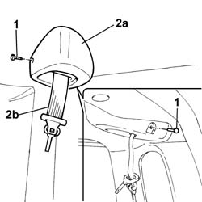
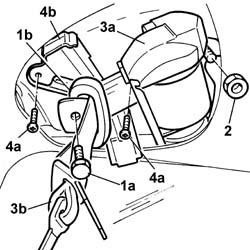

7065B18 CENTRE REAR SEAT BELT - R.R.
- Path
- Procedures > 70 FITTINGS > 7065 SEAT BELTS AND ACCESSORIES > 7065B REAR SAFETY BELTS > 7065B18 CENTRE REAR SEAT BELT - R.R.
- Kind
- repair procedure (removal / refitting; the operation number is the code)
- Applies to
- all engines; all production periods
- Interactive page
- https://sloeber94.github.io/elrnDB-fPnd/en/#/169001918
Applies to: all engines; all production periods
 Removing
Removing
 Refitting
Refitting1. Undo the retaining bolts.
2. Release the cover (2a) from the retaining clips and remove it releasing the seat belt (2b).

Applies to: all engines; all production periods
1. Undo the bolt (1a) securing the loop (1b).
2. Undo the nut securing the reel.
3. Remove the reel (3a) complete with seat belt (3b).
4. Undo the bolts (4a) and remove the bracket (4b) securing the cover.

Applies to: all engines; all production periods
Refitting
RemovingPlace the bracket in position and tighten the fixing bolts.
Fit the reel in place complete with seat belt.
Tighten the nut fixing the reel to torque.
Value - daNm | Fastening | Component | Ø | |
|---|---|---|---|---|
- | 4 | Nut | Reel | M10 X 1.25 |
Tighten the bolt fixing the loop to torque.
Value - daNm | Fastening | Component | Ø | |
|---|---|---|---|---|
- | 4 | Bolt | Seat belt idler | M10 X 1.25 |
Fit the cover in place securing it to the retaining clips and fit the seat belt in position.
Tighten the fixing bolts.